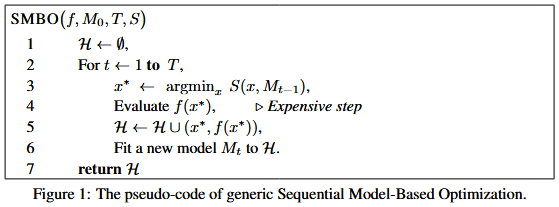

Tree-structured Parzen Estimator Approach
本篇介绍黑盒优化的理论, 重点围绕 Tree-structured Parzen Estimator (TPE) 展开. 主要参考 NIPS 2011 的超参数优化论文: Algorithms for Hyper-Parameter Optimization [1].
Sequential Model-based Global Optimization (SMBO)
序贯搜索方法 (SMBO / 贝叶斯优化) 是为黑盒优化场景设计的: 目标函数不可微、内部机制未知, 只能通过一次次试验拿到“输入→得分/损失”的反馈, 然后边学边试, 用代理模型指导下一次评估. SMBO 用来最优化期望改进 (Expected Improvement, EI), 目标是优化一个昂贵函数 f:X→RN, (X 为输入空间). 期望改进是选择下一个评估点 x 的策略, 基于已知数据和模型, 选择能够最大化改进的点, 形式化为
EIy∗(x):=∫−∞∞max(y∗−y,0)pM(y∣x)dy
其中, y∗ 是分位数阈值 (比如取10%分位, 即数据集中 10% 的数据小于等于该分位数), y 是 f 在 x 点处的取值, 由于 f 函数是无解析式的黑盒, 所以采用模型 M 来近似 PM(y∣x), 即估计在给定 x 条件下的 y=f(x) 概率分布. max(y∗−y,0) 是计算潜在的改进, 如果阈值 y∗ 高于 y 则取差值表示潜在的改进, 否则就是没有改进的可能, 则取 0.
PM(y∣x) 是模型 M 预测的概率分布, 表示输入 x, f(x) 取值为 y 的概率.
最终, 期望改进是对所有可能取值 y 的改进的加权平均.
SMBO 的伪代码如下:

其中, f 即真实运行的函数, M0 是初始的代理模型(可以为空模型或者带先验的模型), T 是外层循环次数(评估 f 的次数), S 是给定模型 M 的采集函数, 即预测点 x 的可优化标量, 用来挑选下一个评估点, 比如 EI (Expected Improvement) / PI (Probability of Improvement) / UCB (Upper Confidence Bound) 或 TPE 的 g(x)/ℓ(x).
H={(xi,f(xi))} 是观测的历史数据, 初始化为空集. Mt−1 用上一轮历史 H 拟合得到的当前代理模型, argminx 取出在可行域 X 内最小化采集函数的点 x (如果是最大化问题, 则用 argmaxx), 这步属于内层数值优化, 通常可以采用随机搜索、多启动、CMA-ES、网格微调等方法.
Evaluate f(x∗) 即实际运行函数 f 拿到真实的结果 y.
Fit a new model Mt to H, 则是用新的历史重新拟合代理模型 M. 这一步, Gaussian Process Approach (GP) 是更新 $p(y\mid x)$, Tree-structured Parzen Estimator (TPE) 则是重建 g(x)/ℓ(x) 或密度估计.
最后返回 H, 最优解可以取其中的 argmin f(x) (最大化问题取 argmax f(x)).
Tree-structured Parzen Estimator (TPE)
Concepts
- 分位数阈值 y∗: 选择 y∗ 为观察到的损失值(或者奖励值)的某个分位数, 如 γ 分位数使 p(y<y∗)=γ. 这样 TPE 通过选择分位数来划分“好解集”和“坏解集”, 这样既保证了优化过程的多样性, 又避免了模型对最优值的过度集中.
- 好解集 ℓ(x): 指那些损失小于 y∗ 的点; 如果是最大化奖励目标, 则是大于 y∗ 的点
- 坏解集 g(x): 指那些损失大于或等于 y∗ 的点; 如果是最大化奖励目标, 则是小于或等于 y∗ 的点
Comparison
高斯过程 (GP): GP 方法通过直接建模目标函数 p(y∣x), 即在给定输入 x 的条件下, 估计输出 y 的分布. 这种方法在面对低维度数据时效果很好, 但当维度很高时, 它的计算开销和样本效率会变差.
TPE (树结构 Parzen 估计): 相较于 GP, TPE 并不直接建模 p(y∣x) , 而是建模 p(x∣y) 和 p(y). TPE 通过替代传统的配置空间分布 (prior distribution) , 采用非参数密度 (如高斯混合模型) 来建模目标函数的行为. 它将模型中的参数空间表示为树状结构, 而不是直接在空间内进行建模.
TPE Modeling
p(x∣y) 在给定损失 y 的条件下, 预测配置 x 的密度. 分为两部分 ℓ(x) 用于好解集, g(x) 用于坏解集.
p(x∣y)={ℓ(x)g(x) if y<y∗ if y≥y∗
通过在 H 中保存已观测变量的有序列表, TPE 算法每次迭代的运行时间可以与 ∣H∣ 成线性关系, 并与被优化的变量 (维度) 的数量成线性关系.
TPE 的 EI 最优化公式推导
EIy∗(x)=∫−∞y∗(y∗−y)p(y∣x)dy=∫−∞y∗(y∗−y)p(x)p(x∣y)p(y)dy
代入 γ=p(y<y∗) 和 p(x)=∫Rp(x∣y)p(y)dy=γℓ(x)+(1−γ)g(x) 得到
∫−∞y∗(y∗−y)p(x∣y)p(y)dy=ℓ(x)∫−∞y∗(y∗−y)p(y)dy=γy∗ℓ(x)−ℓ(x)∫−∞y∗p(y)dy
最后可以推出
EIy∗(x)=γℓ(x)+(1−γ)g(x)γy∗ℓ(x)−ℓ(x)∫−∞y∗p(y)dy∝(γ+ℓ(x)g(x)(1−γ))−1
所以, 为了最大化 EIy∗(x), 我们只需要最大化 ℓ(x)/g(x). 即选择那些在 ℓ(x) 下具有较高概率且在 g(x) 下具有较低概率的点. ℓ(x) 和 g(x) 的树结构形式使得根据 ℓ(x) 来生成许多候选点变得简单. 在每次迭代中, 算法返回具有最大期望改进 EI 的候选点 x∗.
Reference
[1] James Bergstra, Rémi Bardenet, Yoshua Bengio, and Balázs Kégl. 2011. Algorithms for hyper-parameter optimization. In Proceedings of the 25th International Conference on Neural Information Processing Systems (NIPS'11). Curran Associates Inc., Red Hook, NY, USA, 2546–2554.